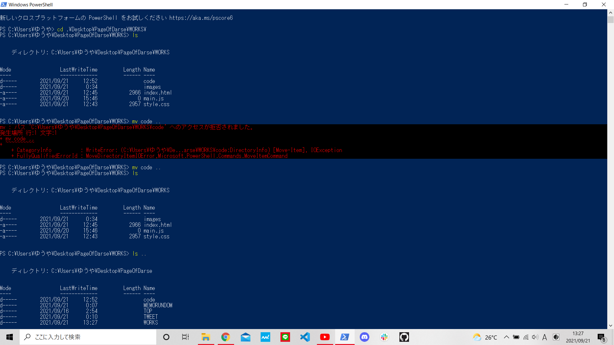

こんにちは！ダースです。
vscodeで新しくディレクトリを作るときに間違えて本来作りたい場所とは別の場所に作ってしまうことはあるあるですよね笑
今回、僕もそのあるある？をしてしまったので、今間違って作ったやつを消して、改めて正しいところにディレクトリを作ろうとしました。
しかし僕はそこでPowerShellに慣れるために、間違った場所に作ってしまったディレクトリを本来作りたかった場所に移してみようと思いました。
目的
codeというディレクトリを間違ってWORKSというディレクトリの中に作ってしまったので、
codeのディレクトリを本来作りたかった場所のPageOfDarseというディレクトリに移す。
まず、分かりやすく説明するために、僕のエクスプローラー内の簡略図をお見せしたいと思います。
...という風に書きましたが、cssでのフローチャート図の作り方を調べたところ、まだ今の僕には難しくて理解できなかったので、PowerPointで作成したものをスクショして載せます💦
A・B・C・D・E・F・G・H・I はその他もろもろのディレクトリやファイルを簡略化して表したものです。
では、実際にcodeというディレクトリをPowerShellを使って、WORKSからPageOfDarseに移していきましょう。
最初にカレントディレクトリをWORKSに移し、lsコマンドを使ってWORKSディレクトリの中にあるディレクトリやフォルダを確認します。
(この作業をするよりも、ls \Users\○○\PageOfDarse\WORKS の方が効率的だったのかも)
codeディレクトリがWORKSディレクトリ内にあることが確認できたので、mvコードを使ってcodeをPageOfDarseに移します。
（ちなみに、PowerShellだと移動させるためのコードはよくMove-Itemだと書いてあるけど、mvでも正常に動くみたいですね。）
あれ、"パス ～ へのアクセスが拒否されました。"ってエラー出た。なんでかいな。調べてみよう。
すると、https://teratail.com/questions/135065 に、「該当フォルダ内のファイルやサブフォルダを別のプロセスが開いている。 場合が結構あり、今回の様なエラーメッセージになることがあります。」と書いてありました。
なるほど～と思い確認してみると、画面下タスクバーのvscodeでcodeディレクトリ内にあるファイルを開いていました。
なので、vscode自体を×を押して消して、もう一度やりなおしてみると...
成功していますね！
ということで今回は以上で終わります。
あくまでこのサイトはプログラミング初心者のクラゲのダースが、プログラミング上達のために備忘録として書いているものです。
よって、間違っている情報がたくさんあったり、効率の悪いやり方をたくさんしている可能性は十分にあるので、うのみにせず、フーンという感覚で見ていただけるとうれしいです。